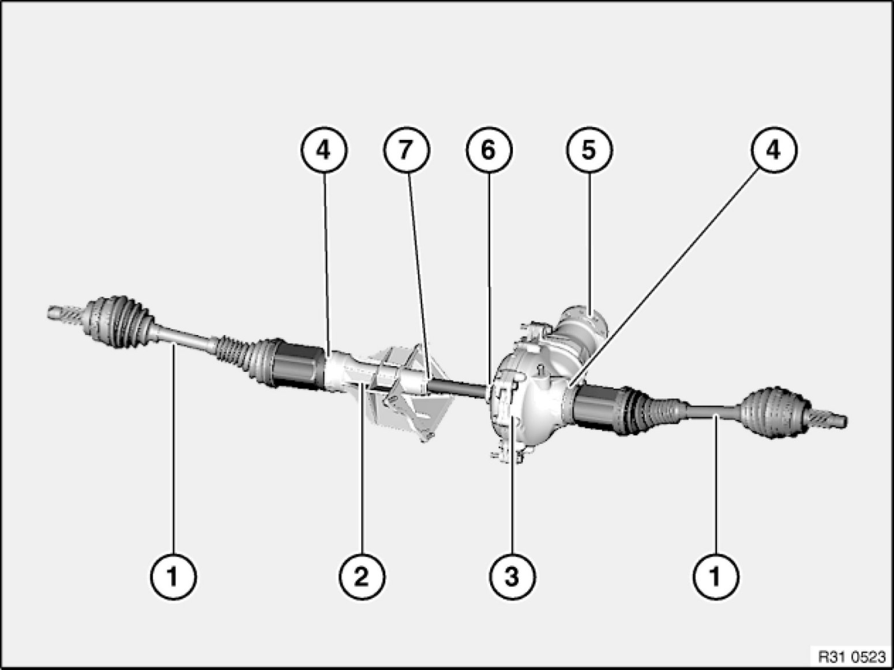
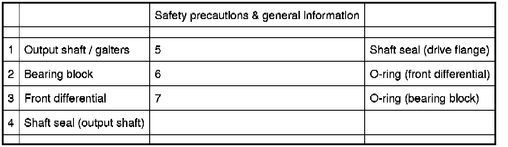

Operation CHARM
: Car repair manuals for everyone.
Home
>>
BMW
>>
2007
>>
X3 3.0si (E83) L6-3.0L (N52K)
>>
Repair and Diagnosis
>>
Transmission and Drivetrain
>>
Drive Axles, Bearings and Joints
>>
Axle Shaft Assembly
>>
Locations
>>
Overview of Front Differential/Output Shafts
Overview of Front Differential/Output Shafts
31 50 ... - Overview of front differential/output shafts

